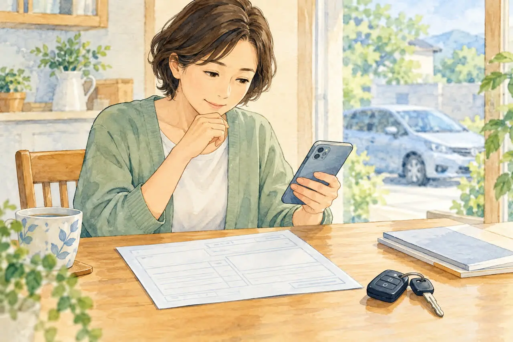
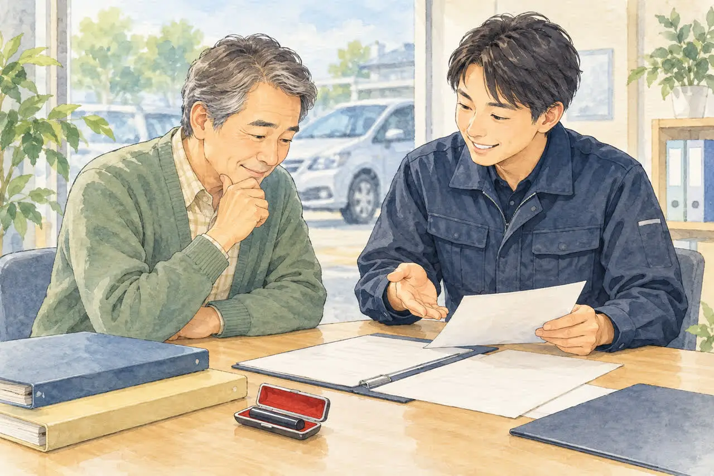
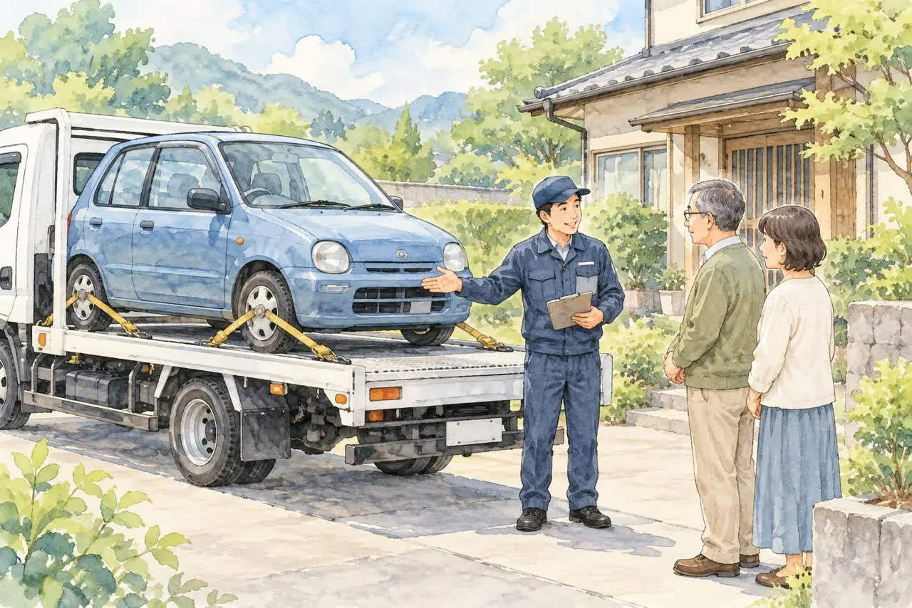

ご家族の車のことでお悩みの方へ
亡くなった家族の車を
廃車するときの手続き
公開
こんにちは、足立区江北で自動車解体・廃車買取をしている「大崎商店 環七店」です。
「父が亡くなって、乗っていた車が駐車場に残ったまま」
「もう家族の誰も運転しないけれど、名義が亡くなった母のままで、どうしたらいいかわからない」
ご家族が亡くなったあと、このような車のご相談をいただくことがあります。葬儀や役所の手続きが続くなかで、車のことまで考えるのは本当に大変ですよね。
亡くなった方の名義の車は、ふつうの廃車とくらべて、相続の状況に応じて追加の書類や確認が必要です。まずは車検証とご家族の状況を確認し、順番に進めていきましょう。
この記事では、亡くなったご家族名義の車を廃車にするまでの流れと、準備しておきたい書類を、できるだけやさしくご紹介します。
① まずは車検証で「所有者」を確認しましょう

最初にしていただきたいのは、車検証を見て「所有者」が誰になっているかを確認することです。車検証は、多くの場合、助手席の前の収納（グローブボックス）に入っています。
所有者によって、このあとの進め方が変わります。
- 所有者が亡くなったご家族本人
→ 相続の手続きが必要です。このあと詳しくご説明します。 - 所有者がディーラーやローン会社
→ ローンが残っていないか、「所有権解除」ができるかを、まず所有者の会社に確認します。 - 所有者がご自身など、生きているご家族
→ 亡くなった方が「使用者」だっただけなので、通常の廃車と同じ手続きで進められます。
「電子車検証」はA6サイズ程度の紙で、所有者情報は券面に記載されていません。「車検証閲覧アプリ」または一緒に保管されている「自動車検査証記録事項」で確認してください。見つからない場合も、当店にご相談いただければ確認のお手伝いをします。
② 亡くなった方の車は「遺産」として扱われます
亡くなった方の名義の車は、預金や家と同じように遺産（相続財産）として扱われます。
相続人が複数いる場合、相続関係や遺言の内容を確認せず、ご家族のどなたか1人の判断だけで処分しないでください。遺言がない場合などは、相続人の間で誰が車を引き継ぐかを話し合い、合意することが基本になります。相続人は、必ずしも同居しているご家族だけとは限りません。
普通車を相続人のうち1人が引き継ぐ場合、次の書類を使う方法があります。相続人が1人だけの場合や、遺言書・裁判所の書類などがある場合は、必要書類が異なります。ここでは、相続人同士で話し合って決める場合をご紹介します。
遺産分割協議書
相続人全員で話し合って、「この車は長男が引き継ぐ」などと決めた内容を書いた書類です。相続人全員の署名と実印が必要になります。
遺産分割協議成立申立書（車の価値が100万円以下の場合）
普通車の価格が100万円以下と確認できる場合は、遺産分割協議成立申立書を使えることがあります。車を引き継ぐ相続人が、遺産分割の協議が成立したことを申し立てる書類です。相続する方が記入し実印を押印するため、登録窓口へ提出する書類の負担を減らせます。
この書類を使う場合も、相続人の合意は必要です。 他の相続人に相談せず、1人で自由に処分できる制度ではありません。
ただし、車の価値が100万円以下だとわかる査定証などの書類を一緒に出す必要があります。
利用できるかは車の価格を確認する資料と相続の状況によります。必要な戸籍の範囲も通常の遺産分割協議書を使う場合と異なるため、書類を取り寄せる前にご相談ください。相続人に未成年者がいる場合や、話し合いがまとまらない場合などは、専門家への確認が必要になることがあります。
③ 普通車の場合に必要な書類チェックリスト

普通車の場合、亡くなった方名義の車を廃車にするには、主に次のものが必要です。
- □ 車検証の原本
- □ ナンバープレート（前・後ろの2枚）
- □ 亡くなった方の戸籍謄本（除籍謄本）
通常は死亡の事実と相続人全員を確認できるものが必要です。遺産分割協議成立申立書を使う場合は、死亡の事実と車を相続する方が相続人であることを確認できる書類で進められる場合があります。法務局が交付する認証文付きの「法定相続情報一覧図の写し」を使える場合もあります。 - □ 遺産分割協議書 または 遺産分割協議成立申立書（相続人が複数の場合）
申立書を使う場合は、車の価値が100万円以下だとわかる査定証なども必要です。 - □ 車を引き継ぐ相続人の印鑑証明（発行から3か月以内）
- □ 車を引き継ぐ相続人の実印
このほか、委任状や譲渡証明書などの書類も必要ですが、必要な用紙は当店で用意します。記入・押印の方法と提出時期は事前にご案内します。亡くなった方の実印を使って、本人の代わりに署名・押印することはしないでください。
ご家族の状況によっては、今の戸籍だけでは相続人全員を確認できず、古い戸籍（改製原戸籍）を取り寄せる必要があることもあります。
戸籍などを取りに行く前に、一度当店へお電話ください。 車検証を見ながら、どの書類が必要かをご案内しますので、役所に何度も足を運ばずに済みます。
※基本の書類については「廃車に必要な書類チェックリスト（普通車）」の記事でも詳しくご紹介しています。
④ 軽自動車の場合
軽自動車は、普通車とは手続きの窓口や書類が異なります。
所有者が亡くなった軽自動車は、親族への名義変更と廃車の手続きを同日に行うことができます。 通常の廃車に必要な車検証・ナンバープレートに加え、死亡に伴う名義変更の書類が必要です。
- □ 車検証の原本
- □ ナンバープレート（前・後ろの2枚）
- □ 死亡の事実と、新しい所有者が相続人（親族等）であることを確認できる戸籍謄本等、または法定相続情報一覧図
- □ 新しい使用者の住所を確認する書類など（必要な場合）
普通車と同じ印鑑登録証明書・実印は、通常必要ありません。ただし、所有者死亡の場合は「車検証とナンバープレートの2点だけ」で済むとは限りません。相続人の合意を確認したうえで、名義変更と廃車に必要な書類を当店からご案内します。
「普通車か軽自動車かわからない」という場合も、車検証を見ればすぐにわかりますので、お気軽にお問い合わせください。
⑤ 廃車の前に気をつけたいこと
「相続放棄」を考えている方は、先に専門家へ
ご家族の中に、借金などの理由で「相続放棄」を考えている方がいる場合は注意が必要です。車などの遺産を処分すると、「相続を受け入れた」とみなされ、相続放棄が認められなくなることがあります。また、相続放棄の申し立ては、原則として自己のために相続の開始があったことを知った時から3か月以内に家庭裁判所へ行う必要があります。
相続放棄を考えている場合は、廃車にする前に、司法書士や弁護士などの専門家にご相談ください。
自動車税のこと
自動車税は、毎年4月1日時点の所有者にかかる税金です。普通車の場合、年度の途中で廃車（抹消登録）にすると、抹消登録した月の翌月から、その年度の3月までの分が還付の対象になります。車の引き取り日や解体日ではなく、抹消登録した月が基準です。未納の税金がある場合は、そちらに充当されることがあります。
東京都では通常、還付の通知が自動的に送られます。ただし、納税義務者が亡くなっている場合は、相続人が受け取るための確認や書類が必要になることがあります。受取人・送付先・必要書類は、東京都自動車税コールセンターなどへ確認してください。
軽自動車税には、年度途中の廃車による月割り還付はありません。
所有者が亡くなっている場合、名義が変わるまでは相続人の代表の方に納税通知書が送られます。代表の方を届け出る用紙（相続人代表者届出書）もあります。詳しくは、都税事務所にご確認ください。
保険のこと
自賠責保険は、廃車にしただけでは解約になりません。保険会社に連絡して解約の手続きをすると、残りの期間に応じてお金が戻ってくることがあります（解約日から満期までの残りが1か月以上あることなどが条件です）。契約者が亡くなっている場合の必要書類や返戻金の受取人も、保険会社へ確認してください。任意保険も、保険会社に連絡して手続きを確認しておきましょう。
自動車重量税は、自動車税とは別の税金です。普通車・軽自動車とも、適正に解体され、車検の残りなどの条件を満たす場合、永久抹消登録や解体届出などと同時に還付を申請します。相続の場合は追加書類が必要になることがあります。還付金・自賠責の返戻金を買取価格に含めて当店が手続きをお受けする場合は、含める金額と受取先、必要な委任等の書類を事前にご案内します。
⑥ 動かない車・長く置いたままの車も大丈夫です

「亡くなってからしばらく誰も乗っておらず、エンジンがかからない」
「タイヤの空気が抜けて、動かせない」
「実家の車庫に置いたままになっている」
このような車も、積載車での引き取りをご相談いただけます。所在地や車の状態、駐車場の進入経路・作業スペースを確認して、対応の可否をご案内します。ご家族が車を運転して持ってくる必要はありません。詳しくは「エンジンがかからない車でも引き取ってもらえる？」「出張引き取りの対応エリア｜無料で伺える範囲は？」もご覧ください。
ご家族の車のことは、大崎商店にご相談ください
亡くなったご家族の車の手続きは、少し複雑に感じるかもしれません。でも、車検証を見れば、必要な書類はある程度しぼりこめます。「何から始めればいいかわからない」という段階でも、まったく問題ありません。
大崎商店では、
- 廃車手続きの代行手数料は無料
- 買取価格がつかない車：環七店から車で片道約30分圏内は引き取り無料です。範囲外はご相談ください
- 買取価格がつく車：片道約30分圏外でも、所在地と車の状態によっては無料で伺えます。遠方など対応できない地域もあるため、可否と費用を事前にご案内します
- 事故車や動かない車もレッカー車で引き取り
- 車種や状態によっては、引き取り当日その場で現金買取も可能
と、ご家族の負担ができるだけ少なくなるようにお手伝いしています。
思い出の詰まったお車だからこそ、最後まで丁寧に対応させていただきます。
電話で相談する 03-3854-4141大崎商店 環七店
電話：03-3854-4141
〒123-0872
東京都足立区江北7丁目1−3
営業時間：月〜土 10:30〜18:00
休業日：日曜・祝日
環七沿い／舎人ライナー
西新井大師西駅
大崎商店 入谷店
電話：03-3899-2837
〒121-0836
東京都足立区入谷7丁目5−11
営業時間：月〜土 9:30〜17:30
休業日：日曜・祝日・第2土曜
お電話の際は、「亡くなった家族の車の廃車について」とお伝えください。車検証をお手元にご用意いただくと、ご案内がスムーズです。
※掲載のイラストはAIで作成したイメージです。実際のご家族・店舗・引き取り現場を撮影したものではありません。
参考：関東運輸局・単独相続の手続き／軽自動車検査協会・解体返納／東京都主税局・自動車税のよくある質問／裁判所・相続の放棄の申述／国土交通省・自賠責保険のよくある質問／軽自動車検査協会・所有者が死亡した車の廃車／国土交通省・電子車検証／国税庁・相続の場合の自動車重量税還付申請書付表